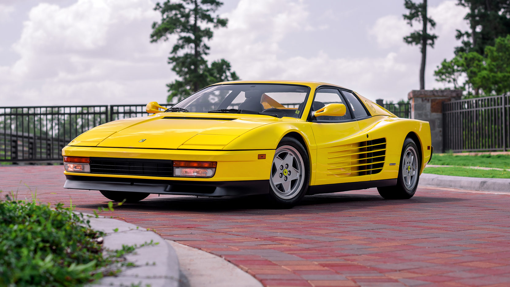

The Ferrari Testarossa (Type F110) is a 12-cylinder mid-engine sports car manufactured by Ferrari, which
went into production in 1984 as the successor to the Ferrari Berlinetta Boxer. The Pininfarina-designed car
was originally produced from 1984 to 1991, with two model revisions following the end of Testarossa
production called the 512 TR and F512 M, which were produced from 1992 to 1996. Including revised
variations, almost 10,000 cars in total were produced, making it one of the most mass-produced Ferrari
models. The Testarossa is a two-door coupé that premiered at the 1984 Paris Auto Show.[3] All versions of the
Testarossa were available with a rear-mounted, five-speed manual transmission. The rear mid-engine design
(engine between the axles but behind the cabin) keeps the centre of gravity in the middle of the car, which
increases stability and improves the car's cornering ability, and thus results in a standing weight
distribution of 40% front: 60% rear.[4] The original Testarossa was re-engineered for the 1992 model year
and was introduced as the 512 TR (TR meaning TestaRossa), at the Los Angeles Auto Show, effectively as a
completely new car,[2] and an improved weight distribution of 41% front, 59% rear.[5] Another new variant
called the F512 M was introduced at the 1994 Paris Auto Show.[2] The car dropped the TR initials and added
the M which in Italian stood for modificata, or translated to modified, and was the final version of the
Testarossa,[2][3] which continued its predecessor's weight distribution improvement of 42% front, 58% rear.
The F512 M was Ferrari's last vehicle that featured the flat-12 engine.
